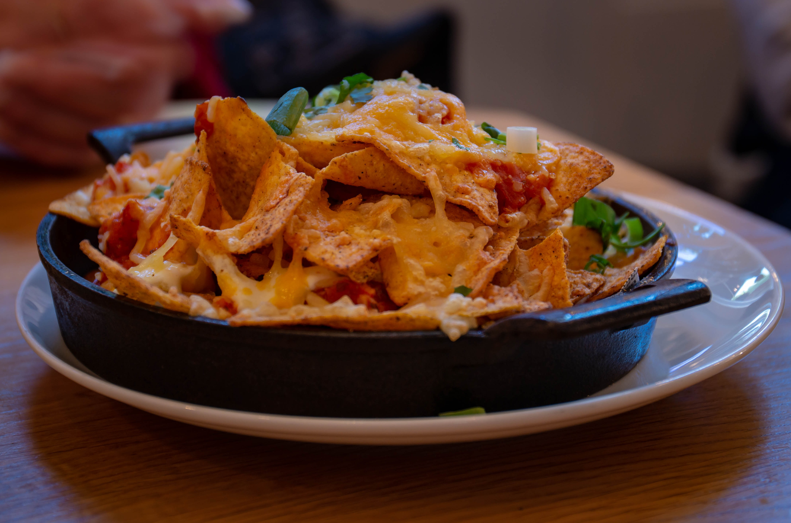

...mmm
Nachos
Amb salsa picant, Cheddar i guacamole
Con salsa picante, Cheddar y guacamole
Fingers
De formatge de cabra i salsa Thai
De queso de cabra y salsa Thay
Nuggets Pollastre / Pollo
Acompanyats de crema de formatge a les fines herbes
Acompañados de crema de queso a las finas hierbas
Capritxos de Cambembert
Empanats amb confitura de ceba
Empanados con confitura de cebolla
Mozzarella de Bufala
Amb guacamole i tomàquet al toc de pesto
Con guacamole y tomate al toque de pesto